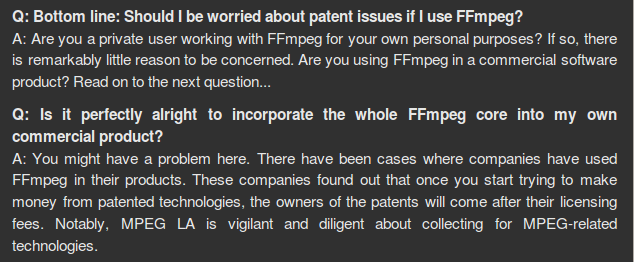

自由開源商用產品面對第三人專利問題的應對之方

在自由開源軟體的商業應用過程中，軟體專利侵權的潛在風險一直是個受到矚目的議題，因為依各國著作權法及電腦程式保護專法的規定，著作權性質的保謢標的多是限定在著作的表現形式上，故而重新撰寫且完全不抄襲他人的程式碼，將有機會主張新創作的程式，是一個全新的創作，而不受到他人既定程式的著作權利拘束，這也是 GNU 計畫 (GNU Project: GNU is Not Unix) 當初設立起步的主要思維：透過群策群力的方式，不加抄襲但重新創作具 Unix 系統所有功能的全新電腦作業系統，來讓後續的應用不受到既定 Unix 作業系統的拘束；然而在專利權的領域裡，因為其保護的標的多為抽象，且可實施在不同載體的技術方法和步驟，故第三人專利的議題在自由開源商用領域可能引發的效應，往往讓商業使用者憂心，畢竟，自由開源軟體專案允許多人共工的模式，一方面確實是加速了軟體專案的開發效率與期程，然而，開發流程裡是不是有開發者誤用或因疏忽寫入第三人既存，且受軟體專利保護的演算法，而讓整體專案後續曝露在專利侵權的風險下，這方面的推論，理論上亦有可能成真。
不過，自由開源軟體專案，在經過了這二十多年的商業化發展之後，全球利用它來進行商業營利的公司，亦已經發展出了不同的措施，可以一定程度面對這些可能產生的第三人專利侵權問題，這些不同措施所能產生的影響各有不同，其有效性也待實務驗證，不過其中有的措施，甚至可能對於全球專利制度產生重大而長遠的影響，這是此篇文章想要進行基礎討論和說明的要點。
【技術方法的抽象特性是引發第三人專利侵權疑慮的主因】
首先要說明的是，著作權保護的標的主要是既成著作的表現形式，故而透過重新創作的流程，即有機會避免侵犯到他人的著作權利，然而專利制度保護的客體與著作權不同，其保護的客體是相對無形的技術方法、設計與工法程序等等，所以一項專利技術可能透過不同的材料或媒介實作出來，例如同一項軟體專利技術可以透過電腦程式語言 α 撰寫實作，但也可能透過 β 或 γ 程式語言撰寫實作出來。因此當甲公司採用程式語言 α 開發出軟體 A，並在 A 中應用到甲公司本身所擁有的專利技術 A' 的時候，若另外一間公司乙後來採用 β 來撰寫另外一套功能相近的軟體 B，並且也在軟體 B 應用實作專利技術 A'，由於兩個軟體是甲、乙分別採用不同程式語言獨立撰寫開發出來，因此即使功能相近、甚至功能上完全相同，但是因為彼此程式碼並沒有參照、承襲的過程，故亦不會產生著作權法上抄襲、侵權的問題，但是因為兩套軟體都實作了專利技術 A'，這時候乙仍然應該要取得專利權人甲的同意，否則在未經取得授權同意的狀況下，乙若直接實作 A' 並將成果進行商品化利用的話，就會有專利侵權的風險產生，即使乙本身是在未知的情況下利用到 A'，若是這個「未知、無辜」的狀況沒有辦法被客觀的證明的話，那未來發生專利司法訴訟時，其亦非常難以完全免除應負的專利侵權責任，因為專利申請到被核可的過程中，它必然會經過公告審驗的程序，故而既成專利其技術方法的實踐流程，已經是公開資訊，故而乙公司就算是力言其產品的開發流程中並未設意去參考甲公司的既成專利，除了自己的聲明之外，也必須續行提出更多客觀的事證，才能夠讓承審法官同意採信。
【自由開源軟體進入商業應用的領域導致侵害第三人專利權的風險上升】
自由開源軟體的開發模式是奠基在志願參與開發的基礎上，許多專案的初始開發目的，並不是在於商業利用，而是以不收取授權金的方式自由散布給他人自由利用，故而其開發流程裡程式碼的吸納對象非常多元，從實來說，也不會就參與者貢獻的程式碼進行是否內含專利技術審驗的流程，這樣的開發態度因為海納百川，故而實踐起來非常具有效率，而過往這些自由開源軟體專案在近似學術研究、興趣分享的立場上，亦不會引發第三人專利的爭訟問題，因為專利是一種商用權利的保護，一項技術方法、設計或是工法若不俱備可以被產業利用的特性（註一），其便不符合專利申請的適格要件，而專利權利的實踐上，也主要是限制那些會影響到專利權人商業營利權利的行為，若是實作軟體專利技術的目的是為了學術研究，或者單純為了個人興趣，由於這樣的行為對於專利權人的經濟收益幾乎不會產生任何影響，因此就算使用者沒有事前取得專利權人的同意，也鮮少會有權利人針對這類的應用行為，透過司法制度進行索賠或提起訴訟（註二）。不過一旦自由開源軟體被實際應用在商業產品中，或者成為商業服務的基礎軟體系統的話，代表這項專利技術的應用，將讓商用的公司因而賺取商業利潤，這樣的商業應用行為便屬於專利權利發揮效力的範圍內，因此當自由開源軟體進入到商業應用的領域時，其第三人專利侵權的風險自然而然地隨之升高。
此種第三人專利保護的抽象與不可確定性的風險，在一般傳統的商業合作關係裡，上下游的兩間公司常常會透過專利侵權責任分擔協議，來進行一定程度的處理，這樣的分擔協議大致是上游廠商需允諾下游廠商，其在程式碼撰寫上，不得參照他人程式或專利技術方法，且須全程紀錄開發流程，以證明該程式專利自行撰寫的純粹性，如此一來，當日後商用產品產生內含第三人專利侵權的爭議時，下游廠商當可以引證上游廠商提供的開發紀錄，以證實其並沒有侵害他人專利權利的故意惡性，從而才不致為承審法院判處惡意侵權的加倍式損害賠償金 (punitive damages)。然而，此種傳統的上下游專利侵權責任分擔協議，本質上並不能完全適用於內嵌自由開源軟體專案的產品！因為從本質來說，自由開源軟體專案在開發上，必然是廣為吸納志工撰寫的參與，而基於這些參與者是在無償的基礎上進行程式碼的貢獻，因此即使在其貢獻裡有誤用，或在全然未知的前提下導入到第三人的軟體專利技術，該自由開源軟體專案的商用者，勢必無法援引或依循傳統上下游式的專利侵權責任分擔協議，來向這些自由開源軟體的開發者或散布者主張損害賠償或提起訴訟，因為就自由開源軟體的授權鏈裡，社群開發者與商用者之間並不具有產業鍵式的對價關係。

▲ 圖1：FFmpeg 官網上面針對專利議題的說明內容（註三）。
實際的例子，可以參考近年來被廣泛利用的多媒體處理框架專案 FFmpeg 專案來說明。在影音串流領域當中有許多被既成專利保護的演算法，因此 FFmpeg 這套自由開源軟體也無可避免地，在軟體實作上會撰寫出與這些既成專利近似的技術方法來。許多 FFmpeg 的使用者想要商用這個開源專利到商業產品裡時，亦常會疑惑這樣的問題，並去信詢問開發團隊：利用 FFmpeg 是否會讓自己面臨專利侵權的相關糾紛？為此，FFmpeg 官方網頁上有一段簡短卻非常清楚的 FAQ 說明（註三），在這段說明中，FFmpeg 專案的開發團隊明確表示：其並無法確切得知 FFmpeg 中是否有利用到第三人專利演算法 (patented algorithms)，因為在軟體實際的開發流程裡，開發者們也並沒有閱讀過這些專利演算法的內容，不過開發團隊也承認，的確有些模糊的跡象 (vague hints) 顯示，若干實作可能落在一些既有專利演算法的主張範圍內，不過即使如此，使用者是否真的會面臨專利糾紛，除了要看身處的司法管轄區的專利規定外，還必須要看使用目的，因為若使用者僅是為了個人目的而利用 FFmpeg 的話，那麼幾乎是沒有理由擔心會面臨專利訴訟，然而，若是為了商業目的來利用的話，那麼商用使用者確實應該嚴肅的看待專利侵權的疑惑問題，因為過往有些將 FFmpeg 應用到商業產品中的公司，實務上確實就因此而被專利權人追索、要求支付專利技術的授權費用，例如擁有 H.264 編碼專利技術的 MPEG LA，就是一個會發動這類專利訴訟的著名者。
【當前全球商業公司所採取的應對措施】
從實而論，善用自由開源軟體來節省開發成本並加速開發效率，已經是全球資通訊產業裡無可逆轉的大勢，故面對上述這些，將自由開源軟體置入商用產品所可能產生的第三人專利侵權風險，許多的商業公司、商業聯盟也在近年陸續發展出了不同的因應措施，來減緩可能發生的智慧財產權衝擊。從內部來說，有調整公司內部的開發流程，與強化提供侵權擔保的應變方案；從外部來看，有些公司則是向外尋求合作與加入全球性的專利合作結盟組織。以下便就這四項應對措施，進行綱要式的說明。
1、建置標準開發流程的自動紀錄以降低主觀侵權責任
在專利侵權糾紛發生時，若侵權人被證實是明知而故意侵權的話 (willful infringement)，各國法院皆得以依其專利法或相關特別法令，酌情將損害賠償金額提高到三倍或更高的幅度（註四），反過來說，受控方若是可以降低被判定為故意侵權的風險，便可以降低公司在專利司法訴訟上支出的金錢損失，因為若是不被承審法院認定是惡意侵權，則專利費用的支付原則上是依專利權人所受損失與所失利益的幅度來估算，以這樣的衡量標準，在專利侵權訴訟上，被訴方若不受到主觀侵權責任的加乘，則賠償金額的估算幾乎完全等同事前取得商用授權的授權金額度。而這邊所謂的標準開發流程，主要是指將產品研發過程的資料與進度內容都紀錄下來的標準化流程，在公司內部有這樣一套基本的標準化流程，將可以顯示公司本身對於智慧財產權的管理與運用有盡到相當程度的努力，進而降低主觀侵權責任。
此種標準開發流程實施的時間愈長、紀錄與保存資料的間隔期間愈短、可修改內容的權限範圍愈窄，都是可以強化這套系統的可信度，例如規定研發人員每週至少進行二次的研發內容與進度紀錄，紀錄內容可採用數位化形式，寫入過程自動化，但讀取權限僅限一定層級的主管人員，而資料一旦寫入後要進行修改，必須齊集二至三位跨部門或是外部合作律師事務所的金鑰，並錄影存證調取過程。此種密集、長期、權限特定的流程下，所保存的內容就具有相當的可信度。而因為自由開源軟體的取用，是屬於向外部取得授權，故開發流程無法擴張去控管至該外部自由開源軟體專案的開發審慎度，故上述的管理流程，多還會針對自由開源軟體的商業應用來進行補強處理，例如：取用開發歷程上較為長遠的顯名開源專案、詳實紀錄來源其託管平台與授權狀態，以及初步判斷是否涉及可能產生的專利議題等等，凡此種種作為，於事涉專利侵權司法爭訟時，都可以據以向承審法院陳報，以之證明已盡相當注意義務，防止侵權利用到他人軟體專利，進而減少可能擴大的侵權損害賠償數額。
2、提前揭示先前技術以阻卻他人軟體專利的申請
一項技術方法之所以能通過專利主管機關的核可，除了本文前面所提及的「產業利用性」之外，還必須要具備「創新性」（註五）。所謂創新性，白話來說，是指申請專利之人是這項技術方法在這個世界上的第一位發明人，若是這世界上已經存在有這項技術方法，並已在該專門領域受眾人熟知的話，則該項技術方法就不具備創新性，也就連帶不符合專利的申請要件，並進而無法得到專利制度的保護。這些已經存在於世界上的技術方法，被稱為「先前技術 (Prior Art)」，當公司在產品研發過程中，發崛到可以符合專利申請要件的技術方法，但經過評估和經濟效益的分析後，評價並沒有必要以此來申請專利，此時，就可以將這項技術方法透過網站披露、期刊發表等手段來公諸於世，使其成為先前技術，這樣的作為，固然是捐棄了己方本來可以申請的專利標的，但從長遠來看，亦同時阻卻了他人將此技術方法在未來申請為其專利標的之可能性，如此一來，當可避免競爭公司將相同的技術方法申請為專利保護，並進而影響到己方對此技術的商用範圍，也就是說，同時減少掉第三人專利糾紛的產生風險。
要完成這樣的揭示，除了個別公司自設網站或投稿期刊來公開技術之外，也可以透過像 "IP.com" 或 "Defensive Publications" 這樣的計畫網站來公布。與 ip.com 主要的合作對象包括 IBM 等跨國性的資服產業，而 Defensive Publication 則是 Linux Defender 計畫下的一項子計畫，由 Open Invention Network (OIN)、Linux Foundation 以及許多跨國企業所合作成立，這些網站的運作目的主要在於宣導、鼓勵各界將已知的先前技術提供出來，讓其公開於網站上，供社會大眾查閱之用，其亦與各國的專利審查機構，例如美國的專利商標局有提報與資訊查找上的合作關係，透過這樣的技術揭露網站，讓自由開源軟體專案的開發者了解到，哪些技術方法是可以安心實作到軟體中的，而在面臨專利訴訟惡棍時，也可以在資料庫中搜尋相關的先前技術，用之作為撤銷爭端專利的基礎（註六）。因此若是一間公司想要將相關的技術方法公諸於世，透過 IP.com 與 Defensive Publication 這樣的網站來進行，都是一個相當不錯的可行方案。
3、透過保險機制向商業服務客戶提供軟體專利擔保契約並量化侵權損益範圍
前述二種措施，主要是從內部管理的觀點，來處理並降低第三人專利可能引發的侵權風險，然而，第三人專利之所謂為第三人專利，就是因為該專利的誤用是來自外部，故而全然內部的管理，確實無法完全防堵掉所有相關的疑慮。故實務上，不少的跨國企業，是兼採外部合作的方式，以組織一個更大範圍的合作聯盟，來處理第三人專利的問題。例如，Red Hat 是自由開源軟體領域裡長期受到關注，且具有穩定獲利歷史的重要指標性公司，其主要是提供商用客製化 Linux 作業系統的技術服務來獲取價金，然而自第三人專利侵權風險問題升高之後，不少客戶也會向 Red Hat 反應：是否能有某些具體可信的措施，能讓其商業服務的客戶免除被專利侵權風險所及的險地？
因應這樣的詢問和需求，Red Hat 提出了商業客戶安心方案（Open Source Assurance，註七），基本上，該方案透過兩個要點來降低自由開源專案在商用服務上的侵權風險，第一個手段是保單的購置，Red Hat 將其商業服務可能涉及的專利侵權風險進行了總量的分析與評估，並就合理的額度與保險公司洽談相應的保險機制，並以這樣的保險機制來回應其客戶的擔憂和疑惑，也就是說，當客戶是透過商業契約來與 Red Hat 建立技術服務關係時，此一商用客戶就自動進入了 Red Hat 安心方案的保護範圍內，若是此客戶因為專利侵權的風險而涉訴並進而負擔賠償責任，則 Red Hat 即可先行墊付此商用客戶被課予的賠償金額，並啟動其保險機制來向保險公司進行保險金的後續理賠申請；而第二個手段，則是 Red Hat 在商業契約裡，和其服務客戶明訂專利侵權損害負擔的金額範圍，例如一個 500 萬元的資服建置或服務案，其個別契約可能明訂 Red Hat 對客戶負擔的安心金額為 300 萬元至 800 萬元不等的幅度，透過這些侵權分擔責任的量化設定，自由開源軟體應用在各個商用環結的責任分擔，也就更形具體而明確。
4、預屯專利透過合作組成軟體專利防禦聯盟
另外一個對當前全球專利制度，有機會產生更深遠影響的舉措，即是 OIN 這樣的公益公司，所屯建的自由開源軟體專利防禦聯盟。其實，專利池 (patent pool) 的概念與實踐自來有之，其運作的方式就是促使有商業合作關係，在產業鍵具上下游分工關係的公司，能夠在簽訂專利共享契約的基礎上，去構築一個聯盟式、夥伴式的專利防禦網。當此專利防禦網的任一家公司，受到專利防禦網之外的商業公司，進行專利侵權訴訟時，此聯盟成員便可以援引其他合作夥伴手上已擁有的專利，對控訴方進行反訴，其運作方式就如同二次大戰之後的冷戰時期，美蘇兩方各屯聚了為數不少的洲際飛彈，讓敵對方知道一旦爆發戰爭，則可能引發玉石俱焚或彼此皆傷的後果，故而降低專利戰爭發生的可能性與風險，或者說，就算發生專利爭議，受控方也比較有機會援引聯盟夥伴裡所屯聚的專利資源，轉而透過私下商議的途徑，得到一個較佳的和解處置方案。而這樣的概念，也是可以比附援引至自由開源軟體的商用領域裡的，不過，因應自由開源軟體在商業使用上不受時間、對象、地域限制的特性所影響，目前由 OIN 主導的 Linux 系統軟體專利防禦聯盟，其實踐方式是將傳統的專利池概念，進行了更廣域的應用與解釋，首先，其在名詞運用上，淡化了專利池這般的傳統語彙，因「池 (pool)」這個字詞在演繹上，有一種入我山門方受蔽護的私有圈意涵在內，故而 OIN 向外強調的是一個飛航禁行區 (No Fly Zone) 的革新概念，意指在 Linux 系統與其他自由開源軟體專案的基礎下，個別受國家權責機構審核後同意的軟體專利仍然是成立與有效的，然而，商用圈所欲逐步建立的共識是，若是使用者依循個別自由開源軟體授權條款的規則來使用這些軟體專利，則可合法使用，僅在使用者不依循授權條款的規則時，才備位產生侵權式的拘束效力（註八），而進一步來說，這些商用使用者，只要願意遵守 OIN 與其合作夥伴，所擘劃的軟體專利防禦共享規則，則進入防禦圈的對象，並不去設入門門檻，亦即沒有進入的資金、所持專利方面的門檻，而更是一種就 Linux 相關產品的商用發展上，不互相進行軟體專利侵權互訴的承諾和互助。
【結論】
以上，大致為近十年自由開源軟體商用領域，依據實務可行性所發展出來，面對第三人專利問題的應對之方。就如同本文一開始所揭示的，這些措施所能產生的影響各有不同，其有效性也仍有待後續時間的驗證，不過從大方向來看，其所施行的步驟和各國立法與行政機構，所在進行的專利制度調整與修正，確實具有相當程度異曲同工之妙！例如在專利侵權的訴訟上，愈來愈多國家就專利蟑螂 (patent troll) 的吊餌行為，開始調高了訴訟法上的惡意侵權歸責，也就是說，從傳統上概由受訴方自證無辜與非故意，慢慢導向控訴方也必須分擔必要的舉證協力，此一改革方向，與前述建置標準開發流程的自動紀錄以降低主觀侵權責任，以及提前揭示先前技術以阻卻他人軟體專利的申請，可說都是朝著同樣的方針來進行處理，也就是說在專利侵權的司法審判上，除了客觀的利用行為外，仍需兼論主觀的侵權犯意；再者，除了透過外部保險制度與組建軟體專利共享聯盟外，許多商用自由開源軟體專案的跨國性機構，例如 Google、IBM 等，也不斷透過公共政策的建言，以引導未來的專利制度能更容納自由開源軟體專案的應用框架。可以合理預期的是，軟體專利的核可機制，在可見的未來並不會遽以消失，然而其運轉方式，必然會因為自由開源軟體的發展趨勢，而得到一定程度的調整與疏解，目前，我們無法鐵律一般的定言，上述這些方案哪一個是對緩解商用自由開源軟體的專利風險最具效力的良方，然而，若是商用企業能夠行有餘力而兼容採之，必然是可以相當程度為自己構築起更安穩的專利風險防禦牆。
註一：這項特性一般稱為「產業利用性」或「商用性」。
註二：以我國專利法第 59 條為例，該條第 1 項規定了七款發明專利權無法發揮效力的狀況，其中前兩款分別是：非出於商業目的之未公開行為、以研究或實驗為目的實施發明之必要行為。由於這兩款行為對於專利權收益所造成的損失是微乎其微，所以在權衡專利制度也同時要鼓勵研究與創作新發明的目的下，我國專利法規定發明專利權的效力不並及於這兩種行為。因此個人在家中利用閒暇時間，應用他人軟體專利來撰寫開發程式以自用，並不會產生侵害他人專利權的效果；單純應用他人專利技術來進行學術研究，並且將結果加以發表出來，也不會引發專利侵權的後果。
註三：https://ffmpeg.org/legal.html。
註四：以我國專利法第 97 條第 2 項規定為例：「依前項規定，侵害行為如屬故意，法院得因被害人之請求，依侵害情節，酌定損害額以上之賠償。但不得超過已證明損害額之三倍。」
註五：一項技術方法必須符合基本的三項要件，才算是具備專利適格性 (Subject Matter Eligibility)，可以用來向國家權責機構申請專利保護，此三項要件為：技術性、新穎性，以及商業利用性。
註六：Linux Defender網站：https://www.linuxdefenders.org/。
註七：Open Source Assurance 官方頁面連結如右：https://www.redhat.com/en/about/open-source-assurance。
註八：更多相關的評論與觀點，可參照，林誠夏，備位啟動的自由開源專案軟體專利：https://www.openfoundry.org/tw/legal-column-list/8498-standby-software-patent-free-and-open-source。